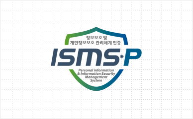

품질경영시스템
ISO 9001
마크로젠 본사 및 소마젠(미주법인)은 고객이 만족하고 신뢰할 수 있는 서비스를 제공하기 위해 영국표준협회(BSI)로부터 ISO 9001
인증을 획득하여 관리·운영을 하고 있습니다. 전사적인 품질 보장 방침 및 목표, 업무 프로세스 상세 규정을 수립함으로써 경영 효율성을 제고함과 동시에 원가절감,
이익개선, 경쟁력 향상 등 긍정적인 성과를 내고 있습니다.
임상진단 품질경영시스템
GMP 인정
마크로젠은 2019년 2월 식품의약품안전처로부터 NGS 기반 체외진단 시약 GMP 인정을 획득했습니다. 이를 통해 체외진단 시약 제조기술의 안전성과 유효성을 검증 받아 자체 개발한 임상 진단 시약을 직접 시장에 출시 및 판매할 수 있습니다.

임상시험검체분석기관 지정(GCLP)
임상시험검체분석기관 지정 제도와 GCLP(Good Clinical Laboratory Practice, 임상시험검체분석관리기준)는 식품의약품안전처가 2017년 10월 공표된 약사법 개정안에 따라 신설되었습니다. 임상시험에 필요한 검체 분석을 공인된 검체 분석기관에서 실시하는 것을 의무화한 제도로 의약품 임상시험의 과학적이고 안전한 수행을 목표로 하고 있습니다. 임상시험검체분석기관은 임상시험 대상에게서 수집된 혈액, 소변 등에 대해 검체 분석시험을 실시하는 기관으로, ‘약사법’과 ‘의약품 등의 안전에 관한 규칙’에 따라 식약처장이 지정합니다.
마크로젠은 2019년 5월 식품의약품안전처가 공인한 임상검체분석기관으로 지정되었습니다. 국내 최초로 NGS 기술을 통한 검체 분석이 가능한 기관으로써 신뢰성 높은 분석 서비스를 제공하여 국내 임상시험의 경쟁력 강화에 기여합니다.
CAP 인증
마크로젠 본사 및 분당 정밀의학센터와 소마젠(미주법인), 싱가포르법인은 NGS 기술을 이용한 임상진단 시퀀싱 분야에서 CAP 인증을 획득했습니다.

CLIA 인증
마크로젠은 국내외 임상진단 시장의 진출을 위해 한국 본사 및 분당 정밀의학센터와 소마젠(미주법인) 임상검사실에 대해 CLIA 인증을 획득했습니다. 이를 통해 국내외 의료기관의 환자 시료를 검사하는 것은 물론, 다양한 임상진단 서비스를 제공하고 있습니다.
유전자검사 정확도평가 인증
마크로젠은 본사에서 수행하는 분자유전검사 서비스와 관련하여 매년 A등급(보험 미등재 항목 포함 시, P등급)을 획득했습니다. 고객에게 더욱 신뢰할 수 있는 결과를 제공함으로써 국민건강 및 생명과학 분야의 발전에 기여합니다.
국제공인시험기관
DAkkS 및 KOLAS 인정 (ISO/IEC 17025)
마크로젠은 2016년 12월 독일국가인정기관인 DAkkS로부터 ‘포렌식 분야 법의유전학’에 대한 국제공인시험기관 인정을 받았으며, 2017년 3월 국가기술표준원 산하 한국인정기구인 KOLAS(Korea Laboratory Accreditation Scheme)로부터 ‘법과학시험 DNA형 분석시험’에 대해 국제공인시험기관 인정을 획득했습니다. DAkkS 및 KOLAS 인정은 마크로젠의 DNA형 분석 시험(Relationship genetic test)이 세계적 수준의 기술력과 신뢰성을 보유하고 있음을 입증하는 것으로 마크로젠이 ISO/IEC 17025 국제표준규격에 따른 국제공인시험성적서를 제공할 수 있고, 국제적으로 통용될 수 있음을 뜻합니다. 또한 마크로젠이 발급한 해당 분야 시험성적서가 국제 시험소인 정기구협의체(ILAC)에 가입한 전 세계 94개국에서 상호 인증절차에 따라 자국에서 발급된 시험성적서와 동등한 효력을 가지게 되는 것이기도 합니다.

CSP 인증 프로그램
마크로젠은 고객들이 신뢰할 수 있는 최고품질의 서비스를 제공하기 위해 Illumina, Pacific Biosciences,Life Technologies, Thermo Fisher Scientific, Agilent Technology 등의 협력사가 제공하는 서비스 공급업체 인증 프로그램(CSP, Certified Service Provider)에 참여합니다. 자체적으로 구축한 전사 서비스 품질경영시스템과 함께 다양한 CSP인증 프로그램 참여를 통해 유전자분석 플랫폼 공급업체가 규정한 서비스 품질기준을 준수합니다. 고품질의 서비스를 제공하고, 유전자분석 플랫폼 공급업체와의 협력을 바탕으로 공동마케팅 및 지원 프로그램을 운영함으로써 고객들에게 다양한 혜택을 제공합니다.


정보보호 관리체계
ISO27701 (국제표준 개인정보보호)
마크로젠은 국제표준화기구(ISO)가 2019년 8월 제정한 가장 권위 있는 국제 표준 개인정보보호 인증 ISO27701(국제표준 개인정보보호)을 획득하여 국내·국제 최고 수준의 정보보호 인증 3종을 모두 취득한 유일한 기업입니다.
※ 유효기간 : 2021.06.22 ~ 2024.06.21
ISMS-P (정보보호 및 개인정보보호 관리체계)
마크로젠은 정밀의학에 필요한 정보의 철저한 관리 체계를 구축하기 위해 ISMS-P 인증을 획득했습니다. 고객 정보 및 유전체 데이터를 안전하게 보호한다는 것을 입증하는 객관적인 지표입니다. 마크로젠이 업계 최초로 획득한 ISMS-P는 과학기술정보통신부와 개인정보보호위원회가 공동으로 고시한 국내 최고 수준의 보안 관리 체계입니다.
※ 유효기간 : 2021.03.03 ~ 2024.03.02

ISO/IEC 27001:2013 인증
마크로젠은 업계 최초 국내 개인정보보호(PIMS) 및 국제 정보보호(ISO/IEC 27001) 인증을 획득했습니다.
※ 유효기간 : 2021.03.03 ~ 2024.03.02